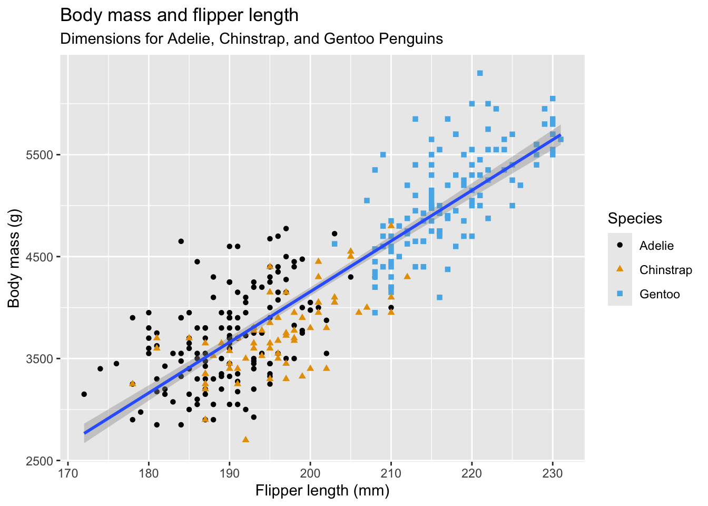
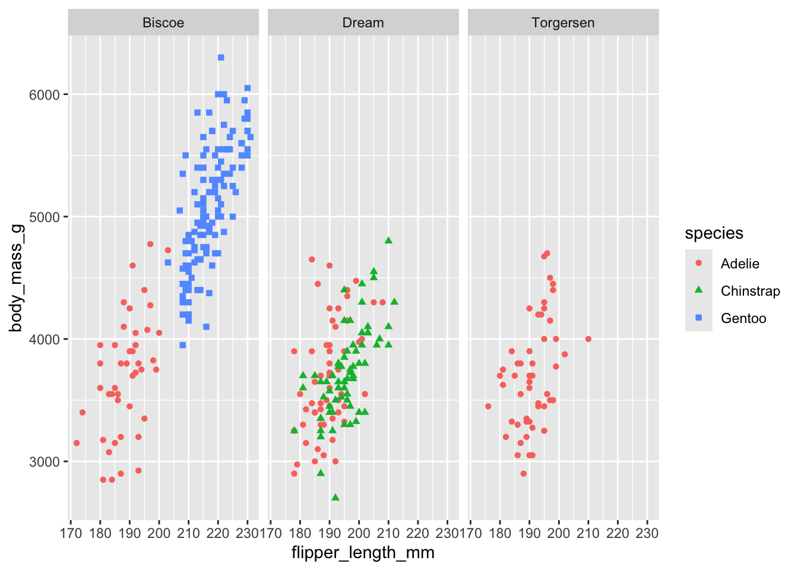
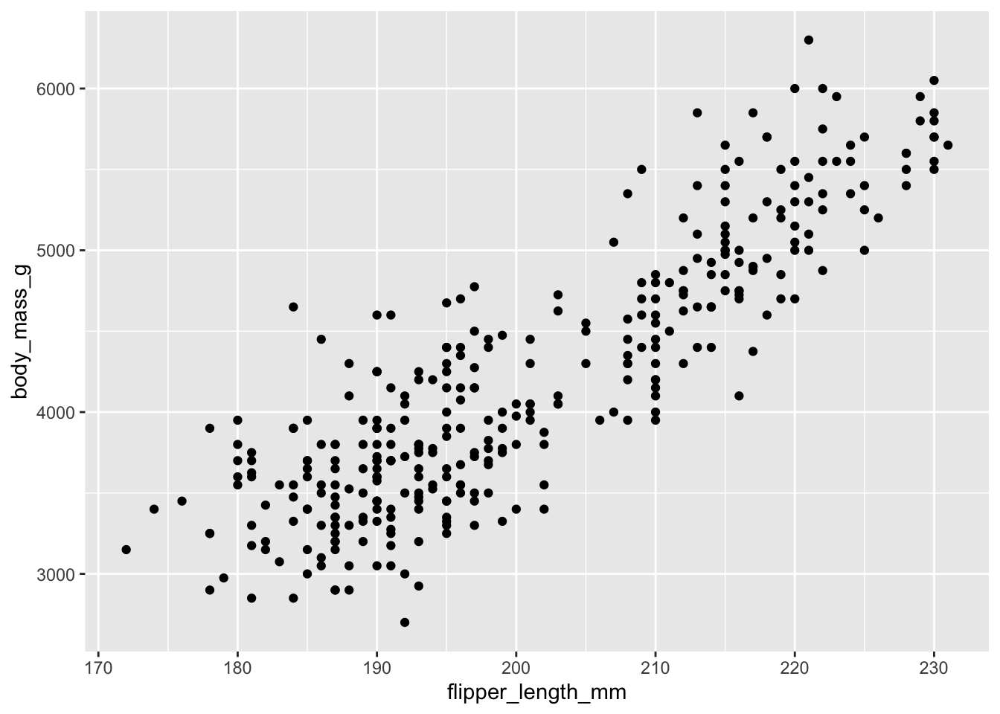

#install.packages("tidyverse")
library(tidyverse) # para cargar la librería, que incluye los otros 9 paquetes
# tidyverse_update() # para actualizacionesAprendiendo a programar - 01
Git y GitHub
Clonamos el repo antiguo del club_de_R que ya existía. Rena tiene windows entonces instaló Git Bash (https://gitforwindows.org/) y VSCode (https://code.visualstudio.com/). Fran tiene Mac entonces viene por defecto Git, y ya tenía previamente instalado VSCode.
Esto lo hicimos para poder ir guardando nuestras actualizaciones y versiones en GitHub, a medida que vayamos avanzando en las sesiones de estudio. Nuestro primer objetivo es leer el libro “R for Data Science” de (Wickham, Garret Centigaka-Rundel).
Libro R for Data Science
Whole game
En este libro se escribe en Tidyverse principalmente, no en Rbase. Tidyverse tiene nueve parquetes: dplyr, purrr, forcats, lubridate, tidyr, readr, stringr, tibble, ggplot2. Para ver actualizaciones de tidyverse:
1 Data visualition
Hay paquetes que vienen con datos disponibles para practicar. Con el paquete ggplot2 se usar para hacer gráficos y también para estéticas.
Si no tienes un paquete instalado, debes hacerlo para poder cargarlo con library().
library(palmerpenguins)
library(ggthemes)
palmerpenguins::penguins# A tibble: 344 × 8
species island bill_length_mm bill_depth_mm flipper_length_mm body_mass_g
<fct> <fct> <dbl> <dbl> <int> <int>
1 Adelie Torgersen 39.1 18.7 181 3750
2 Adelie Torgersen 39.5 17.4 186 3800
3 Adelie Torgersen 40.3 18 195 3250
4 Adelie Torgersen NA NA NA NA
5 Adelie Torgersen 36.7 19.3 193 3450
6 Adelie Torgersen 39.3 20.6 190 3650
7 Adelie Torgersen 38.9 17.8 181 3625
8 Adelie Torgersen 39.2 19.6 195 4675
9 Adelie Torgersen 34.1 18.1 193 3475
10 Adelie Torgersen 42 20.2 190 4250
# ℹ 334 more rows
# ℹ 2 more variables: sex <fct>, year <int>Para tener una idea de los datos, podemos usar la función gimplse. Nos dice la cantidad filas y columnas que tiene la base de datos, y el tipo de datos de cada columna.También muestra los datos de las primeras filas de cada columna, separados por comas.
glimpse(penguins)Rows: 344
Columns: 8
$ species <fct> Adelie, Adelie, Adelie, Adelie, Adelie, Adelie, Adel…
$ island <fct> Torgersen, Torgersen, Torgersen, Torgersen, Torgerse…
$ bill_length_mm <dbl> 39.1, 39.5, 40.3, NA, 36.7, 39.3, 38.9, 39.2, 34.1, …
$ bill_depth_mm <dbl> 18.7, 17.4, 18.0, NA, 19.3, 20.6, 17.8, 19.6, 18.1, …
$ flipper_length_mm <int> 181, 186, 195, NA, 193, 190, 181, 195, 193, 190, 186…
$ body_mass_g <int> 3750, 3800, 3250, NA, 3450, 3650, 3625, 4675, 3475, …
$ sex <fct> male, female, female, NA, female, male, female, male…
$ year <int> 2007, 2007, 2007, 2007, 2007, 2007, 2007, 2007, 2007…Para graficar se usa ggplot2 y se escribe por capas:
ggplot(
data = penguins, # se especifica de donde sacamos los datos para graficar
mapping = aes(x = flipper_length_mm, y = body_mass_g) # variables de los ejes
) +
geom_point(aes(color = species, shape = species)) + # tipo de graficos y si es que se quiere color y forma, en base a alguna variable, en este caso la especie
geom_smooth(method = "lm") + # agrega línea de tendencia
labs( # para agregar nombres y etiques al gráficos
title = "Body mass and flipper length",
subtitle = "Dimensions for Adelie, Chinstrap, and Gentoo Penguins",
x = "Flipper length (mm)", y = "Body mass (g)",
color = "Species", shape = "Species"
) +
scale_color_colorblind() # otra escala de colores
Si quieren datos para practicar está la iniciativa TidyTuesday: https://github.com/rfordatascience/tidytuesday
También se pueden hacer facetas con facet_wrap():
ggplot(penguins, aes(x = flipper_length_mm, y = body_mass_g)) +
geom_point(aes(color = species, shape = species)) +
facet_wrap(~island)
Y para guardar los gráficos está gg_save():
ggplot(penguins, aes(x = flipper_length_mm, y = body_mass_g)) +
geom_point()
ggsave(filename = "penguin-plot.png") #esto quedará guardado en el directorio del proyecto2 Workflow: basics
Las variables solo prueden ser letras y pueden estar separadas por “_” o “.”, y puede contener números pero no empezar con ellos.
# 1hola <- "hola"
hola <- "hola"3 Data transformation
Usan otra libería para tener datos
library(nycflights13)
flights #base de datos a usar# A tibble: 336,776 × 19
year month day dep_time sched_dep_time dep_delay arr_time sched_arr_time
<int> <int> <int> <int> <int> <dbl> <int> <int>
1 2013 1 1 517 515 2 830 819
2 2013 1 1 533 529 4 850 830
3 2013 1 1 542 540 2 923 850
4 2013 1 1 544 545 -1 1004 1022
5 2013 1 1 554 600 -6 812 837
6 2013 1 1 554 558 -4 740 728
7 2013 1 1 555 600 -5 913 854
8 2013 1 1 557 600 -3 709 723
9 2013 1 1 557 600 -3 838 846
10 2013 1 1 558 600 -2 753 745
# ℹ 336,766 more rows
# ℹ 11 more variables: arr_delay <dbl>, carrier <chr>, flight <int>,
# tailnum <chr>, origin <chr>, dest <chr>, air_time <dbl>, distance <dbl>,
# hour <dbl>, minute <dbl>, time_hour <dttm>filter()
Para hacer un pipe en mac: shift + command + m Para hacer un pipe en windows: shift + control + m
flights %>%
filter(dep_delay > 120) #filtramos todas las mayores a 120 en dep_delay# A tibble: 9,723 × 19
year month day dep_time sched_dep_time dep_delay arr_time sched_arr_time
<int> <int> <int> <int> <int> <dbl> <int> <int>
1 2013 1 1 848 1835 853 1001 1950
2 2013 1 1 957 733 144 1056 853
3 2013 1 1 1114 900 134 1447 1222
4 2013 1 1 1540 1338 122 2020 1825
5 2013 1 1 1815 1325 290 2120 1542
6 2013 1 1 1842 1422 260 1958 1535
7 2013 1 1 1856 1645 131 2212 2005
8 2013 1 1 1934 1725 129 2126 1855
9 2013 1 1 1938 1703 155 2109 1823
10 2013 1 1 1942 1705 157 2124 1830
# ℹ 9,713 more rows
# ℹ 11 more variables: arr_delay <dbl>, carrier <chr>, flight <int>,
# tailnum <chr>, origin <chr>, dest <chr>, air_time <dbl>, distance <dbl>,
# hour <dbl>, minute <dbl>, time_hour <dttm>flights %>%
filter(month == 1 & day == 1) #filtrarmos los meses mayor a 1 y día mayor a 1# A tibble: 842 × 19
year month day dep_time sched_dep_time dep_delay arr_time sched_arr_time
<int> <int> <int> <int> <int> <dbl> <int> <int>
1 2013 1 1 517 515 2 830 819
2 2013 1 1 533 529 4 850 830
3 2013 1 1 542 540 2 923 850
4 2013 1 1 544 545 -1 1004 1022
5 2013 1 1 554 600 -6 812 837
6 2013 1 1 554 558 -4 740 728
7 2013 1 1 555 600 -5 913 854
8 2013 1 1 557 600 -3 709 723
9 2013 1 1 557 600 -3 838 846
10 2013 1 1 558 600 -2 753 745
# ℹ 832 more rows
# ℹ 11 more variables: arr_delay <dbl>, carrier <chr>, flight <int>,
# tailnum <chr>, origin <chr>, dest <chr>, air_time <dbl>, distance <dbl>,
# hour <dbl>, minute <dbl>, time_hour <dttm>flights %>%
filter(month == 1 | month == 2) # "o"# A tibble: 51,955 × 19
year month day dep_time sched_dep_time dep_delay arr_time sched_arr_time
<int> <int> <int> <int> <int> <dbl> <int> <int>
1 2013 1 1 517 515 2 830 819
2 2013 1 1 533 529 4 850 830
3 2013 1 1 542 540 2 923 850
4 2013 1 1 544 545 -1 1004 1022
5 2013 1 1 554 600 -6 812 837
6 2013 1 1 554 558 -4 740 728
7 2013 1 1 555 600 -5 913 854
8 2013 1 1 557 600 -3 709 723
9 2013 1 1 557 600 -3 838 846
10 2013 1 1 558 600 -2 753 745
# ℹ 51,945 more rows
# ℹ 11 more variables: arr_delay <dbl>, carrier <chr>, flight <int>,
# tailnum <chr>, origin <chr>, dest <chr>, air_time <dbl>, distance <dbl>,
# hour <dbl>, minute <dbl>, time_hour <dttm>flights %>%
filter(month %in% c(1, 2)) # %n% significa que contiene 1 o 2, es lo mismo que el anterior# A tibble: 51,955 × 19
year month day dep_time sched_dep_time dep_delay arr_time sched_arr_time
<int> <int> <int> <int> <int> <dbl> <int> <int>
1 2013 1 1 517 515 2 830 819
2 2013 1 1 533 529 4 850 830
3 2013 1 1 542 540 2 923 850
4 2013 1 1 544 545 -1 1004 1022
5 2013 1 1 554 600 -6 812 837
6 2013 1 1 554 558 -4 740 728
7 2013 1 1 555 600 -5 913 854
8 2013 1 1 557 600 -3 709 723
9 2013 1 1 557 600 -3 838 846
10 2013 1 1 558 600 -2 753 745
# ℹ 51,945 more rows
# ℹ 11 more variables: arr_delay <dbl>, carrier <chr>, flight <int>,
# tailnum <chr>, origin <chr>, dest <chr>, air_time <dbl>, distance <dbl>,
# hour <dbl>, minute <dbl>, time_hour <dttm>flights %>%
filter(month == 1)# A tibble: 27,004 × 19
year month day dep_time sched_dep_time dep_delay arr_time sched_arr_time
<int> <int> <int> <int> <int> <dbl> <int> <int>
1 2013 1 1 517 515 2 830 819
2 2013 1 1 533 529 4 850 830
3 2013 1 1 542 540 2 923 850
4 2013 1 1 544 545 -1 1004 1022
5 2013 1 1 554 600 -6 812 837
6 2013 1 1 554 558 -4 740 728
7 2013 1 1 555 600 -5 913 854
8 2013 1 1 557 600 -3 709 723
9 2013 1 1 557 600 -3 838 846
10 2013 1 1 558 600 -2 753 745
# ℹ 26,994 more rows
# ℹ 11 more variables: arr_delay <dbl>, carrier <chr>, flight <int>,
# tailnum <chr>, origin <chr>, dest <chr>, air_time <dbl>, distance <dbl>,
# hour <dbl>, minute <dbl>, time_hour <dttm>arrange()
Cambia el orden de las filas segun el valor de las columnas
flights %>%
arrange(year, month, day, dep_time) # ordena de menor a mayor# A tibble: 336,776 × 19
year month day dep_time sched_dep_time dep_delay arr_time sched_arr_time
<int> <int> <int> <int> <int> <dbl> <int> <int>
1 2013 1 1 517 515 2 830 819
2 2013 1 1 533 529 4 850 830
3 2013 1 1 542 540 2 923 850
4 2013 1 1 544 545 -1 1004 1022
5 2013 1 1 554 600 -6 812 837
6 2013 1 1 554 558 -4 740 728
7 2013 1 1 555 600 -5 913 854
8 2013 1 1 557 600 -3 709 723
9 2013 1 1 557 600 -3 838 846
10 2013 1 1 558 600 -2 753 745
# ℹ 336,766 more rows
# ℹ 11 more variables: arr_delay <dbl>, carrier <chr>, flight <int>,
# tailnum <chr>, origin <chr>, dest <chr>, air_time <dbl>, distance <dbl>,
# hour <dbl>, minute <dbl>, time_hour <dttm>flights %>%
arrange(desc(dep_delay)) # desc() ordena de mayor a menor# A tibble: 336,776 × 19
year month day dep_time sched_dep_time dep_delay arr_time sched_arr_time
<int> <int> <int> <int> <int> <dbl> <int> <int>
1 2013 1 9 641 900 1301 1242 1530
2 2013 6 15 1432 1935 1137 1607 2120
3 2013 1 10 1121 1635 1126 1239 1810
4 2013 9 20 1139 1845 1014 1457 2210
5 2013 7 22 845 1600 1005 1044 1815
6 2013 4 10 1100 1900 960 1342 2211
7 2013 3 17 2321 810 911 135 1020
8 2013 6 27 959 1900 899 1236 2226
9 2013 7 22 2257 759 898 121 1026
10 2013 12 5 756 1700 896 1058 2020
# ℹ 336,766 more rows
# ℹ 11 more variables: arr_delay <dbl>, carrier <chr>, flight <int>,
# tailnum <chr>, origin <chr>, dest <chr>, air_time <dbl>, distance <dbl>,
# hour <dbl>, minute <dbl>, time_hour <dttm>distinct()
Encuentra todos las filas únicas en un conjunto de datos
flights %>%
distinct(origin, dest) # A tibble: 224 × 2
origin dest
<chr> <chr>
1 EWR IAH
2 LGA IAH
3 JFK MIA
4 JFK BQN
5 LGA ATL
6 EWR ORD
7 EWR FLL
8 LGA IAD
9 JFK MCO
10 LGA ORD
# ℹ 214 more rowsflights %>%
distinct(origin, dest, .keep_all = TRUE) #nos mantiene la info de las otras columnas# A tibble: 224 × 19
year month day dep_time sched_dep_time dep_delay arr_time sched_arr_time
<int> <int> <int> <int> <int> <dbl> <int> <int>
1 2013 1 1 517 515 2 830 819
2 2013 1 1 533 529 4 850 830
3 2013 1 1 542 540 2 923 850
4 2013 1 1 544 545 -1 1004 1022
5 2013 1 1 554 600 -6 812 837
6 2013 1 1 554 558 -4 740 728
7 2013 1 1 555 600 -5 913 854
8 2013 1 1 557 600 -3 709 723
9 2013 1 1 557 600 -3 838 846
10 2013 1 1 558 600 -2 753 745
# ℹ 214 more rows
# ℹ 11 more variables: arr_delay <dbl>, carrier <chr>, flight <int>,
# tailnum <chr>, origin <chr>, dest <chr>, air_time <dbl>, distance <dbl>,
# hour <dbl>, minute <dbl>, time_hour <dttm>mutate()
Para crear columnas nuevas
flights %>% # creamos la columna gain y speed, a partir de otras columnas del tibble
mutate(
gain = dep_delay - arr_delay,
speed = distance / air_time * 60
)# A tibble: 336,776 × 21
year month day dep_time sched_dep_time dep_delay arr_time sched_arr_time
<int> <int> <int> <int> <int> <dbl> <int> <int>
1 2013 1 1 517 515 2 830 819
2 2013 1 1 533 529 4 850 830
3 2013 1 1 542 540 2 923 850
4 2013 1 1 544 545 -1 1004 1022
5 2013 1 1 554 600 -6 812 837
6 2013 1 1 554 558 -4 740 728
7 2013 1 1 555 600 -5 913 854
8 2013 1 1 557 600 -3 709 723
9 2013 1 1 557 600 -3 838 846
10 2013 1 1 558 600 -2 753 745
# ℹ 336,766 more rows
# ℹ 13 more variables: arr_delay <dbl>, carrier <chr>, flight <int>,
# tailnum <chr>, origin <chr>, dest <chr>, air_time <dbl>, distance <dbl>,
# hour <dbl>, minute <dbl>, time_hour <dttm>, gain <dbl>, speed <dbl>flights %>%
mutate(
gain = dep_delay - arr_delay,
hours = air_time / 60,
gain_per_hour = gain / hours,
.keep = "used" # me deja solo las columnas usadas y las nuevas
)# A tibble: 336,776 × 6
dep_delay arr_delay air_time gain hours gain_per_hour
<dbl> <dbl> <dbl> <dbl> <dbl> <dbl>
1 2 11 227 -9 3.78 -2.38
2 4 20 227 -16 3.78 -4.23
3 2 33 160 -31 2.67 -11.6
4 -1 -18 183 17 3.05 5.57
5 -6 -25 116 19 1.93 9.83
6 -4 12 150 -16 2.5 -6.4
7 -5 19 158 -24 2.63 -9.11
8 -3 -14 53 11 0.883 12.5
9 -3 -8 140 5 2.33 2.14
10 -2 8 138 -10 2.3 -4.35
# ℹ 336,766 more rowsselect()
Para seleccionar o eliminar columnas
flights %>%
select(year, month, day) # A tibble: 336,776 × 3
year month day
<int> <int> <int>
1 2013 1 1
2 2013 1 1
3 2013 1 1
4 2013 1 1
5 2013 1 1
6 2013 1 1
7 2013 1 1
8 2013 1 1
9 2013 1 1
10 2013 1 1
# ℹ 336,766 more rowsflights %>%
select(year:day) # selecciona todas las columnas entre year y day, ambas incluso# A tibble: 336,776 × 3
year month day
<int> <int> <int>
1 2013 1 1
2 2013 1 1
3 2013 1 1
4 2013 1 1
5 2013 1 1
6 2013 1 1
7 2013 1 1
8 2013 1 1
9 2013 1 1
10 2013 1 1
# ℹ 336,766 more rowsflights %>%
select(!year:day) # para no seleccionar esas# A tibble: 336,776 × 16
dep_time sched_dep_time dep_delay arr_time sched_arr_time arr_delay carrier
<int> <int> <dbl> <int> <int> <dbl> <chr>
1 517 515 2 830 819 11 UA
2 533 529 4 850 830 20 UA
3 542 540 2 923 850 33 AA
4 544 545 -1 1004 1022 -18 B6
5 554 600 -6 812 837 -25 DL
6 554 558 -4 740 728 12 UA
7 555 600 -5 913 854 19 B6
8 557 600 -3 709 723 -14 EV
9 557 600 -3 838 846 -8 B6
10 558 600 -2 753 745 8 AA
# ℹ 336,766 more rows
# ℹ 9 more variables: flight <int>, tailnum <chr>, origin <chr>, dest <chr>,
# air_time <dbl>, distance <dbl>, hour <dbl>, minute <dbl>, time_hour <dttm>flights %>%
select(where(is.character))# A tibble: 336,776 × 4
carrier tailnum origin dest
<chr> <chr> <chr> <chr>
1 UA N14228 EWR IAH
2 UA N24211 LGA IAH
3 AA N619AA JFK MIA
4 B6 N804JB JFK BQN
5 DL N668DN LGA ATL
6 UA N39463 EWR ORD
7 B6 N516JB EWR FLL
8 EV N829AS LGA IAD
9 B6 N593JB JFK MCO
10 AA N3ALAA LGA ORD
# ℹ 336,766 more rowsflights %>%
select(tail_num = tailnum) # se pueden renombrar las variables seleccionadas# A tibble: 336,776 × 1
tail_num
<chr>
1 N14228
2 N24211
3 N619AA
4 N804JB
5 N668DN
6 N39463
7 N516JB
8 N829AS
9 N593JB
10 N3ALAA
# ℹ 336,766 more rowsrename()
Para renombrar nombres de variables
flights %>%
rename(tail_num = tailnum)# A tibble: 336,776 × 19
year month day dep_time sched_dep_time dep_delay arr_time sched_arr_time
<int> <int> <int> <int> <int> <dbl> <int> <int>
1 2013 1 1 517 515 2 830 819
2 2013 1 1 533 529 4 850 830
3 2013 1 1 542 540 2 923 850
4 2013 1 1 544 545 -1 1004 1022
5 2013 1 1 554 600 -6 812 837
6 2013 1 1 554 558 -4 740 728
7 2013 1 1 555 600 -5 913 854
8 2013 1 1 557 600 -3 709 723
9 2013 1 1 557 600 -3 838 846
10 2013 1 1 558 600 -2 753 745
# ℹ 336,766 more rows
# ℹ 11 more variables: arr_delay <dbl>, carrier <chr>, flight <int>,
# tail_num <chr>, origin <chr>, dest <chr>, air_time <dbl>, distance <dbl>,
# hour <dbl>, minute <dbl>, time_hour <dttm>relocate()
Para mover las variables
flights %>%
relocate(time_hour, air_time)# A tibble: 336,776 × 19
time_hour air_time year month day dep_time sched_dep_time
<dttm> <dbl> <int> <int> <int> <int> <int>
1 2013-01-01 05:00:00 227 2013 1 1 517 515
2 2013-01-01 05:00:00 227 2013 1 1 533 529
3 2013-01-01 05:00:00 160 2013 1 1 542 540
4 2013-01-01 05:00:00 183 2013 1 1 544 545
5 2013-01-01 06:00:00 116 2013 1 1 554 600
6 2013-01-01 05:00:00 150 2013 1 1 554 558
7 2013-01-01 06:00:00 158 2013 1 1 555 600
8 2013-01-01 06:00:00 53 2013 1 1 557 600
9 2013-01-01 06:00:00 140 2013 1 1 557 600
10 2013-01-01 06:00:00 138 2013 1 1 558 600
# ℹ 336,766 more rows
# ℹ 12 more variables: dep_delay <dbl>, arr_time <int>, sched_arr_time <int>,
# arr_delay <dbl>, carrier <chr>, flight <int>, tailnum <chr>, origin <chr>,
# dest <chr>, distance <dbl>, hour <dbl>, minute <dbl>flights %>% relocate(year:dep_time, .after = time_hour) # para especificar donde ponerlas (.after y .before)# A tibble: 336,776 × 19
sched_dep_time dep_delay arr_time sched_arr_time arr_delay carrier flight
<int> <dbl> <int> <int> <dbl> <chr> <int>
1 515 2 830 819 11 UA 1545
2 529 4 850 830 20 UA 1714
3 540 2 923 850 33 AA 1141
4 545 -1 1004 1022 -18 B6 725
5 600 -6 812 837 -25 DL 461
6 558 -4 740 728 12 UA 1696
7 600 -5 913 854 19 B6 507
8 600 -3 709 723 -14 EV 5708
9 600 -3 838 846 -8 B6 79
10 600 -2 753 745 8 AA 301
# ℹ 336,766 more rows
# ℹ 12 more variables: tailnum <chr>, origin <chr>, dest <chr>, air_time <dbl>,
# distance <dbl>, hour <dbl>, minute <dbl>, time_hour <dttm>, year <int>,
# month <int>, day <int>, dep_time <int>flights %>% relocate(starts_with("arr"), .before = dep_time)# A tibble: 336,776 × 19
year month day arr_time arr_delay dep_time sched_dep_time dep_delay
<int> <int> <int> <int> <dbl> <int> <int> <dbl>
1 2013 1 1 830 11 517 515 2
2 2013 1 1 850 20 533 529 4
3 2013 1 1 923 33 542 540 2
4 2013 1 1 1004 -18 544 545 -1
5 2013 1 1 812 -25 554 600 -6
6 2013 1 1 740 12 554 558 -4
7 2013 1 1 913 19 555 600 -5
8 2013 1 1 709 -14 557 600 -3
9 2013 1 1 838 -8 557 600 -3
10 2013 1 1 753 8 558 600 -2
# ℹ 336,766 more rows
# ℹ 11 more variables: sched_arr_time <int>, carrier <chr>, flight <int>,
# tailnum <chr>, origin <chr>, dest <chr>, air_time <dbl>, distance <dbl>,
# hour <dbl>, minute <dbl>, time_hour <dttm>group_by()
Agrupa las filas
flights %>%
group_by(month) # en este caso la estructura de la tabla es la misma, pero está agrupada por grupos, entonces al hacer análisis después es a partir de estos grupos# A tibble: 336,776 × 19
# Groups: month [12]
year month day dep_time sched_dep_time dep_delay arr_time sched_arr_time
<int> <int> <int> <int> <int> <dbl> <int> <int>
1 2013 1 1 517 515 2 830 819
2 2013 1 1 533 529 4 850 830
3 2013 1 1 542 540 2 923 850
4 2013 1 1 544 545 -1 1004 1022
5 2013 1 1 554 600 -6 812 837
6 2013 1 1 554 558 -4 740 728
7 2013 1 1 555 600 -5 913 854
8 2013 1 1 557 600 -3 709 723
9 2013 1 1 557 600 -3 838 846
10 2013 1 1 558 600 -2 753 745
# ℹ 336,766 more rows
# ℹ 11 more variables: arr_delay <dbl>, carrier <chr>, flight <int>,
# tailnum <chr>, origin <chr>, dest <chr>, air_time <dbl>, distance <dbl>,
# hour <dbl>, minute <dbl>, time_hour <dttm>summarize()
flights %>%
group_by(month) %>%
summarize(
avg_delay = mean(dep_delay)) # como tiene NAs, el promedio es NA, pero se puede corregir con lo siguiente# A tibble: 12 × 2
month avg_delay
<int> <dbl>
1 1 NA
2 2 NA
3 3 NA
4 4 NA
5 5 NA
6 6 NA
7 7 NA
8 8 NA
9 9 NA
10 10 NA
11 11 NA
12 12 NAflights %>%
group_by(month) %>%
summarize(avg_delay = mean(dep_delay, na.rm = TRUE))# A tibble: 12 × 2
month avg_delay
<int> <dbl>
1 1 10.0
2 2 10.8
3 3 13.2
4 4 13.9
5 5 13.0
6 6 20.8
7 7 21.7
8 8 12.6
9 9 6.72
10 10 6.24
11 11 5.44
12 12 16.6 flights %>%
group_by(month) %>%
summarize(
avg_delay = mean(dep_delay, na.rm = TRUE),
n = n()) #numero de datos# A tibble: 12 × 3
month avg_delay n
<int> <dbl> <int>
1 1 10.0 27004
2 2 10.8 24951
3 3 13.2 28834
4 4 13.9 28330
5 5 13.0 28796
6 6 20.8 28243
7 7 21.7 29425
8 8 12.6 29327
9 9 6.72 27574
10 10 6.24 28889
11 11 5.44 27268
12 12 16.6 28135slice_ functions
- df %>% slice_head(n = 1) takes the first row from each group.
- df %>% slice_tail(n = 1) takes the last row in each group.
- df %>% slice_min(x, n = 1) takes the row with the smallest value of column x.
- df %>% slice_max(x, n = 1) takes the row with the largest value of column x.
- df %>% slice_sample(n = 1) takes one random row.
flights %>%
group_by(dest) %>%
slice_max(arr_delay, n = 1) %>%
relocate(dest)# A tibble: 108 × 19
# Groups: dest [105]
dest year month day dep_time sched_dep_time dep_delay arr_time
<chr> <int> <int> <int> <int> <int> <dbl> <int>
1 ABQ 2013 7 22 2145 2007 98 132
2 ACK 2013 7 23 1139 800 219 1250
3 ALB 2013 1 25 123 2000 323 229
4 ANC 2013 8 17 1740 1625 75 2042
5 ATL 2013 7 22 2257 759 898 121
6 AUS 2013 7 10 2056 1505 351 2347
7 AVL 2013 8 13 1156 832 204 1417
8 BDL 2013 2 21 1728 1316 252 1839
9 BGR 2013 12 1 1504 1056 248 1628
10 BHM 2013 4 10 25 1900 325 136
# ℹ 98 more rows
# ℹ 11 more variables: sched_arr_time <int>, arr_delay <dbl>, carrier <chr>,
# flight <int>, tailnum <chr>, origin <chr>, air_time <dbl>, distance <dbl>,
# hour <dbl>, minute <dbl>, time_hour <dttm>ungroup()
Para desagrupar
flights %>%
ungroup()# A tibble: 336,776 × 19
year month day dep_time sched_dep_time dep_delay arr_time sched_arr_time
<int> <int> <int> <int> <int> <dbl> <int> <int>
1 2013 1 1 517 515 2 830 819
2 2013 1 1 533 529 4 850 830
3 2013 1 1 542 540 2 923 850
4 2013 1 1 544 545 -1 1004 1022
5 2013 1 1 554 600 -6 812 837
6 2013 1 1 554 558 -4 740 728
7 2013 1 1 555 600 -5 913 854
8 2013 1 1 557 600 -3 709 723
9 2013 1 1 557 600 -3 838 846
10 2013 1 1 558 600 -2 753 745
# ℹ 336,766 more rows
# ℹ 11 more variables: arr_delay <dbl>, carrier <chr>, flight <int>,
# tailnum <chr>, origin <chr>, dest <chr>, air_time <dbl>, distance <dbl>,
# hour <dbl>, minute <dbl>, time_hour <dttm>.by()
Para agrupar dentro del código, sin usar group_by()
flights %>%
summarize(
delay = mean(dep_delay, na.rm = TRUE),
n = n(),
.by = month
)# A tibble: 12 × 3
month delay n
<int> <dbl> <int>
1 1 10.0 27004
2 10 6.24 28889
3 11 5.44 27268
4 12 16.6 28135
5 2 10.8 24951
6 3 13.2 28834
7 4 13.9 28330
8 5 13.0 28796
9 6 20.8 28243
10 7 21.7 29425
11 8 12.6 29327
12 9 6.72 27574flights %>%
summarize(
delay = mean(dep_delay, na.rm = TRUE),
n = n(),
.by = c(origin, dest) # para múltiples variables
)# A tibble: 224 × 4
origin dest delay n
<chr> <chr> <dbl> <int>
1 EWR IAH 11.8 3973
2 LGA IAH 9.06 2951
3 JFK MIA 9.34 3314
4 JFK BQN 6.67 599
5 LGA ATL 11.4 10263
6 EWR ORD 14.6 6100
7 EWR FLL 13.5 3793
8 LGA IAD 16.7 1803
9 JFK MCO 10.6 5464
10 LGA ORD 10.7 8857
# ℹ 214 more rows